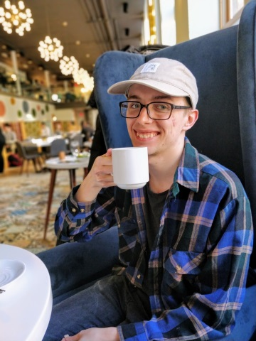

The Owosso Community Players are a theater group that have been performing in Mid-Michigan since the 1950s at the Lebowski Center in downtown Owosso. I had the pleasure of interning with OCP during the summer of 2016, and my task was to bring online ticketing to the theater. This evolved to include CRM software, as well as a complete redesign of the website. Price was a major concern as well, as OCP is a non-profit organization.
After researching online ticketing options by comparing marketed features, online reviews, interviews with sales representatives, and interviews with current users, I compiled a short report to review with the Executive Director. Once we had decided on a solution that met all our criteria, I needed to update the website to make it compatible with the online ticketing system. Because we would already be making changes to the site, we also decided to make a full re-design and modernization of the website a part of the project as well. You can visit the site by clicking the button below.
Owosso Community Players Website
This project allowed me to participate and gain experience fulfilling many different roles including:
One Takeaway
While interning with the Owosso Community Players, I had the pleasure of working directly under the Executive Director. She helped me more thoroughly consider the needs of OCP in my search for great technology solutions, everything from financial to donor relations to creative control. This needs evaluation, combined with professional business communication and presentation practice, has helped me become a better experience evaluator and persuasive communicator.
Detailed Ticketing and CRM Report 
|
 |
| A snapshot of me celebrating the new website with brunch |
While at OCP, I didn’t just work on technology solutions and web development, I also aided in marketing material design. By clicking the button below, you can see the 2016-2017 sponsorship advertisement and form I helped create with guidance from the executive director. This form was used to show sponsors of the theater all the available programs they could sponsor, as well as provide them information about what that sponsorship would entail. Lastly, it was designed to give sponsors a method of giving within the document. Since this project occurred in 2016, I have developed a much greater understanding of design and human factors. However, it still stands as a marketing product that fulfilled its organization requirements.
During this activity at OCP, I acted as both an IT administrator and Front-End web-developer. First, a requirement for our new ticketing and CRM provider was for our website to have an SSL certificate. In the process of working with the hosting company to achieve this, I also changed the site to allow for load-balancing to be implemented on the site. This made the site much more stable, especially as they see large traffic spikes when new performances become available and marketing campaigns begin.
At the same time, I used the ticketing companies web integration guide to serve contact from the ticketing provider to users on OCP’s site. This required a host of changes be made to the code of the website, including HTML and JavaScript to host the content, and CSS to make it beautiful and user-friendly.
When you browse the site and enter the ticketing process on the OCP site, you can see the results of these activities. This can be found by clicking the button below.